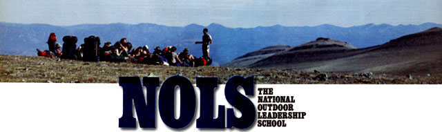
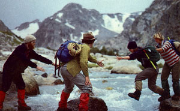
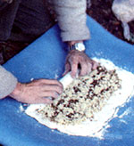
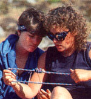
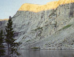
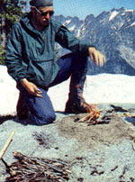
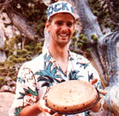
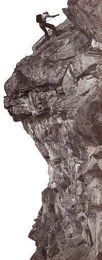

Learning to lead the "wild life" in comfort and safety
Waking to a bright sunny morning, I'm aware of something moving outside our rain fly. I sit up in my sleeping bag and look toward the stream. There, at the water's edge, is a large brown bear. Grizzly? I'm not sure, but I am sure that if my heart beats any harder it's going to break a rib.
Two people are trying to scare him off by banging on some pots, but this bear doesn't rattle easily. Instead, he heads straight for them. Not sure what to do, I yell "No!" which seems to do the trick. Now he's heading for me. In seconds he's closing the gap between us, and I'm helpless, frozen with fear. Then I feel the ice-cold water hitting me in the face.
I open my eyes. It's nighttime, quite windy, and rain is pouring off the tarp over my head and straight into my face. I've been dreaming. Heavy-duty nightmare.
Confused, I watch as someone in long underwear struggles in the downpour to secure our rain fly. Then it comes back to me. I left New York's Lower East Side three days ago. This is Wyoming, and I'm here-somewhere in the Shoshone National Forestwith 16 other campers for the National Outdoor Leadership School's Wilderness Skills Wyoming (NOLS-WSW) course-a two week backpacking expedition into Wyoming's Wind River Range. This is our first night in the mountains, the time is 3:00 a.m., and I've just learned some valuable lessons. First, our rain fly should be closer to the ground with a more gradual pitch. Second, this school is an around-the-clock experience. And third, wild country fosters some unbearable dreams.
Feeling the Impact
I'm up again at 5:30, this time with all three of my tent/cook mates. It's sunny, but the air is brisk, so we climb into wool jackets and wind pants before joining the gang over at our instructors' camp near Roaring Fork Lake. The time has come to get the 111B Hiker camp stoves burning. No fire, no coffee.
I think it's safe to say we have more babes in the woods here than seasoned backpackers, but that's O.K. After all, WSW is an entry level course to backcountry living and travel. Ranging in age from 26 to 54, we have quite a mixed batch-mothers, married couples, engineers, financial experts, teachers, writers, a computer programmer, a land developer, a Coast Guardsman, an attorney, a psychologist and two cardiologists. And while we all have our own personal reasons for being here, NOLS has a couple of goals of their own: 1) to educate us in outdoor leadership (the skills needed to take ourselves and others into the wilderness in comfort and safety) and 2) to give us experience in minimum-impact camping (techniques that allow us to enjoy the wilderness without tearing it up). Unlike other outdoor programs, the emphasis here at NOLS is not how to get out of survival situations, but how to avoid getting into them.
But right now our education centers upon getting the camp stoves working. Karen Mott, one of our instructors, shows us how. Check the fuel, 20 or so pumps, a mist of gas, a match, a fire. We watch and wait for the yellow flame to burn blue-green for clean before we start cooking.
Watching Karen, I think NOLS instructors are a modern-day wild bunch of sorts. At 27, Karen may be the NOLS rookie on this trip, but having spent several years guiding clients on hunts for Montana moose, elk and grizzly, she's no stranger to the wilderness. Aside from her other duties, Karen is responsible for the four horses carrying our food for the next nine days.
Next, we have Deb Trainor, 34, a physical education teacher from outside of Boston. This five-year NOLS pro specializing in rock climbing is also a newlywed. Married just 18 days ago, Deb will leave for her honeymoon (three weeks in the mountains) at the conclusion of our current course.
Finally, there's our expedition leader, Jim Landmann, 31. A 10-year NOLS vet and an enthusiastic sailor, Jim strikes me as a modern mountain man. I could easily see him in the 1800s, baiting greenhorns with tall tales. During our first question and answer session, someone asked, "Are you in radio contact?"
"Not at the moment," was Jim's reply, "but sometimes I receive signals from ships at sea."
The flame has blued, the coffee brewed. As we sip our drinks, Jim identifies the plastic bags of flours, grains and other hard-to-ID-without-a-wrapper food supplies. We then head for our own stoves and our first attempt at outdoor oatmeal.
After breakfast, we break camp and watch as Jim, Deb and Karen run each campsite through the NOLS white glove test. Conservation is a major theme at NOLS-conservation of our own energy, our environment and our equipment. And we don't cut corners. At one camp, dislodged stones and deadfall are returned to their original niches. At another, grass flattened by sleeping pads is raked over. At the next, scraps of food and pocket litter are collected. Then comes our campsite and humiliation; an abandoned lash strap is discovered in the leaves, and it stands out like a bowling ball on a pool table. Sheepishly, we recover our forgotten gear.
At first, this housekeeping seems nitpicky, but consider this: Roughly 100,700 people visited the wilderness areas of the Wind Rivers in 1987. If only half of them had lost a sock, dropped a beer can or left half-burnt branches in a fire pit, this place would look about as pristine as Manhattan's Central Park.
It's 10:30 a.m., the inspection's over, and it's time to move on. Strapping on my pack and feeling its 50-plus pounds, I notice that there's an awful lot of sky out here. But at 9,400 feet (quite a step up from my sea-level apartment), catching my breath seems to be a chore. Enjoying the deep quiet, however, comes naturally, and I relax for a minute before we move on to our next campsite.
Our final destination will be south of Sweetwater Gap, which is north of South Pass-the Oregon Trail's gateway across the continental divide and all points west, circa the mid-1800s. We'll be hitting the gap and leaving the mountains without Jim, Deb and Karen to escort us.
But that challenge is two weeks away. I'm not sure where we'll be tonight since we'll chart our course as we go.
Time to move.
The Trail to Leadership
At 3:45 p.m. on our second day, a five-hour hike leaves many of us with "hot spots"those red, sensitive spots on novice feet that signal oncoming blisters. At 4:00, we come over a saddle and watch as the snowcapped summit of Wind River Peak is engulfed by thunderclouds and lightning.
The trek across tough terrain with sore feet isn't a lot of fun, but I'd go through the blisters all over again for this view of Wind River Peak. To NOLS, of course, backpacking is much more than blisters and sightseeing; it's the main vehicle for developing wilderness leadership skills.
Our expedition leaves Roaring Fork Lake in a three-prong patrol to lessen our impact on the trail. Along the way, I listen to Jim hawk "trail technique" and "expedition behavior" like a vendor at a baseball game. Most of us catch on to what he's driving at after taking our turn at the lead. The point position seems to open the gate for the racehorse in most of us, but heavy packs, hot sun and nature's speed bumps stress the need to conserve energy, which we do by practicing rhythmic breathing, the rest step and other trail techniques.
There are good reasons for the NOLS emphasis on self-conservation. The organization's founder, Paul Petzoldt, wrote in The New Wilderness Handbook (W. W. Norton), "As long as everyone is having an enjoyable time, feeling well, comfortable, and unworried, human nature is at its best. But when the storm strikes, food runs short, an accident happens, or time schedules go awry whenever the chips are down-people without conscious control can become like animals in the jungle."
Knowing this, we learn to watch out for each other. If someone needs to stop for food, air or water, everyone takes a break. If someone can't handle his or her pack, we redistribute the weight. Keeping our group healthy and happy helps keep the animals at bay and us out of the jungle.
Our trip from Roaring Fork Lake is a case in point. Along the way, a fellow hiker and ex-Marine said to me, "A group travels only as fast as its slowest member." He mentioned it after one of our troops almost dropped on the trail. None of the rest of us noticed, but Jim saw what was happening and called for a break. During that time, he cautioned us to talk to each other and to speak out when we're having trouble. As we hoisted our packs on, he asked the tired hiker to take the lead. When she did, her pace quickened, endurance improved, and we were able to travel with fewer breaks and less fatigue. A lesson in leadership.
In addition to learning to read each other, we spend some time on maps and land navigation, my personal weak points. Once, as I was about to lead Deb's group across a bridge at Stough Creek, she asked me if I was sure we were still on course. The convenient bridge in front of me and the heavy pack on my back said "yes." But after a map check, I realized a walk across the bridge would take us in the wrong direction-180° wrong. Deb also pointed out that if we ever did become lost, we should survey our surroundings before checking our maps. If you do the opposite, "you can make yourself believe you're where you're supposed to be."
Rocky Mountain Ways
It's day nine, we're somewhere near Tayo Park, and I never thought I'd need a watch in the wilderness. But without one, it's hard to make it to class on time. And though the backdrop of horses grazing near a mountain lake may momentarily lull us into a sense of vacation, we quickly remember that NOLS is a school. So far, we've attended classes on camping, cooking, first aid, horsepacking, fly-fishing, rock climbing and knot tying. It's almost like life on campus here at Wind River U.
During our stay at Stough Creek Basin, I learn just how difficult it is to find a NOLS-approved campsite. It's no easy trick locating a camp that's off the main trail, relatively flat and dry, out of sight of other campers, and also far enough away from water sources and natural beauty spots (such as waterfalls) so that the ecology is not disturbed by our presence. What's more, you have to watch out for leaning deadfall ("widow-makers") or escarpments of loose rock. And while the Stough Creek Basin others the most beautiful scenery I've ever seen, it's composed of sloping terrains, loose rock and marshy campsites. It took us an hour and a half to find and stake out a claim.
After locating an appropriate area, each group of three or four tent/cook mates sets up its camp in three sections-sleeping quarters, a kitchen and bathroom (the same accommodations as my New York apartment, only more spacious).
Most of my free time here is spent in the kitchen. At 6:00 a.m. I'm parked near the stove, waiting for water to boil. After witnessing two cases of GI troubles during our first two days, we've learned to treat our water with respect and iodine. Or we boil it.
Once the water's boiled, we clean all utensils, enjoy a hot drink and prepare the morning menu. As far as breakfast goes, we've progressed from cold cereal to jazzed-up oatmeal to whole-wheat pancakes made from scratch. But it wasn't until Karen introduced our group to the smells and flavors of outdoor-baked cinnamon rolls that I began to really feel at home. Baking is the true test of the outdoor chef.
After breakfast, I enjoy watching people wander in for our group meetings in nothing more than long johns, sunglasses, baseball caps and hiking boots. It seems that fashion at 10,000 feet stresses function, not form. Though standard NOLS issue is restricted to earth tones (to lessen visual impact), we're not prevented from wearing more colorful combinations. I think a tent mate summed up our attitude best when he said, "I don't care what I look like. I'd wear a Donald Duck outfit as long as it was warm."
As at any other school, there's a time and place for hooky. It's 9:00 a.m., and we're between a lake and a mountain. Time for some fishing or rock climbing. Since my best catch at our last camp was a horse flop in the meadow behind me, I pass on the fly rod for a shot at scaling a 45-foot wall of rock.
We've already covered the basics: bouldering (handholds, footwork and how to read the rock), how to rig a harness and tie knots, communication and rope systems. After watching an engineer and one of our cardiologists make the climb, I grab a "brain bucket" (climbing helmet) and tie in.
Looking over the rope system, I feel like a pebble in a slingshot. To my right is my "belayer," or human anchor. The rope connecting us starts at my harness, runs up the rock and loops through a carabiner secured at the top before finding its way back down to the belayer. Once the rope is secure, the signal is given and I head up.
Now, I'm not a big risk taker. The cliff I'm on isn't really all that steep. Even so, after my first move, my heart's working overtime. With a white-knuckle grip, I hang on to the rock and search for a crevice or jagged edge-anything to help me up.
Pausing to catch my breath wherever gravity permits, I make it three-quarters of the way up before I feel like I'm running out of moves and nerve. But a stretch here, some encouragement from Deb up top and the enthusiasts below, and I make it all the way. There, my stifled panic turns to exhilaration and my finger tips tingle from their recent sanding. Checking out the view overlooking the treetops and the lake below, I can't help but wonder if the trout are biting. But it's 5:00 p.m. now. And I'm starved.
Since Karen is leaving with the horses tomorrow, we've put together a special menu to celebrate our last night together as a group. We're having pan-fried trout in cornmeal, fresh-baked bread, chicken casserole, Spanish rice, macaroni and cheese, salad, popcorn to snack on, and two crosshatched blueber ry pies (baked in a dutch oven with a twig fire on the lid), compliments of Deb and Karen. Now that's mountain-range cooking!
Ready or Not. . .
Stretched out on a log bridging the banks of the Sweetwater River, I listen to the water, enjoy my freshly laundered clothes and wonder if Murphy's law is the law of nature.
Yesterday was the beginning of our walkout, and it was my turn to lead one of the two groups. After hiking for seven hours, with one of us sick and possibly on the verge of dehydration, we discovered what it felt like to be lost in the wilderness.
We had started out at 8:05 a.m., and after reflecting on my shortcomings as a map reader, I asked our two best navigators to lead us from our camp at Mountain Sheep Lake back to the main trail, which they did successfully. By 11:30 a.m., after a couple of lousy creek crossings and an exhausting uphill hike, we hit the flat, well-marked trail through Sweetwater Gap, and it was smooth sailing. Checking our time-control plan, we were pretty much on schedule. But by 3:20 p.m., Murphy's law took over.
It was obvious to me that we were on the main trail, but the rivers and meadows we passed just didn't seem to be on the map. We were exhausted, unable to locate our campsite and, with one sick hiker weaving all over the trail, the only thing that kept our spirits up was spotting the other group ahead of us. They, too, were lost.
We were happy to see each other, but soon tempers heated up as we argued over the different theories on our whereabouts. After many disagreements, we all conceded that daylight was running out, a storm seemed imminent and there was only one clearly marked trail. The decision was made to grab the first decent campsites we could find.
After making camp, three ofus scouted out the trail ahead to get a better fix on our location. It was on our way back that dumb luck tapped us on the shoulder. Out of the blue, in the middle of nowhere, a fellow traveler decided to fill his water bottle from a nearby river. After screwing on the cap, he looked up to see a sign not three feet from his face-"Sweetwater Gap 5 miles." We quickly pulled out our maps. We were less than three miles from our pickup point.
That was yesterday; it's now close to noon. Time to break camp and make that 50-minute hike to our final campsite. Even though our bus will be arriving tomorrow around 10:00 a.m., we've decided to evacuate our friend before nightfall if at all possible. We redistribute gear and move on.
Leaving It All Behind
In less than two hours, I'll be stepping out of a hot shower, into a clean Hawaiian shirt and over to Svilar's Restaurant for one of their two-pound T-bone steak dinners. After that, it'll be the Elk's Club for a night of cold beer and country swing dancing. Until then, I'm just taking it easy and enjoying the bus ride. Today is graduation day at NOLS.
From my window seat, I spot an antelope high-tailing it across the sagebrush and heading for the backcountry that we just left. Before leaving, we met with Jim and Deb to discuss the events of the last few days.
Although we did manage to evacuate our friend yesterday, it wasn't a model performance. After we reached the end of the trail, two of us headed for our pickup point to notify Jim and Deb of our situation. While we were gone, other group members tried to muster help by leaving messages in the forest registry and on vehicles parked at the trail head. Luckily, one of the vehicles belonged to a NOLS staffer, so our sick buddy got to spend the rest of the night back in town.
But we made some mistakes. First, we failed to follow our preplanned evacuation procedure. It was as if each of us was running an evacuation of our own. No one was sure of what the group was supposed to do. That's a communication problem, and a strike against me in the leadership department.
What's more, we neglected to cancel the messages we left behind. If anyone else read those notes, they might think someone was still in trouble. We had to send runners to cancel the messages.
We discussed other aspects of our lost patrol before enjoying our first civilized lunch in weeks (the oatmeal cookies were the best I ever had) and boarding the bus. Once inside, you could hear the systematic open ing of windows as we were reminded that the last two weeks had been soapless ones.
We're now traveling along Route 28 back to Lander. Looking beyond the telephone poles and lines that fence us of from the wild country, I recall an overnight camping trip I attempted with my younger brother more than 10 years ago. We hauled (then dragged) a four-person tent up a hill, couldn't find our campsite, ran out of food and water and headed for home at the first sign of light. My trip with NOLS has been my first since then. But given the opportunity now, I'm sure I could plan a weekender that everyone would enjoy. My map reading (among other things) still needs work, but I think I could avoid repeating past mistakes.
After we pass a solar-powered rest stop, I continue to think about where I've been and where I'm heading. The night before our walkout, we all sat and talked about our days in the wilderness. What did being out here mean to us? What efforts should be made to preserve the wilderness? The questions continued for a while before Deb pulled out a speech made in 1854 by a Native American named Chief Seattle. Though the speech concerned the sale of Indian land in the Seattle, Washington, area to the U.S. government, it could have been the NOLS creed.
"There is no quiet place in the white man's cities. No place to hear the unfurling of leaves in the spring or the rustle of insects' wings . . . . And what is there to life if a man cannot hear the lonely cry of the whippoorwill or the arguments of the frogs around the pond at night? . . . If we sell you our land, you must keep it apart and sacred, as a place where even the white man can go to taste the wind that is sweetened by the meadow's flowers .... If we sell you our land, love it as we've loved it. Care for it as we've cared for it. Hold in your mind the memory of the land as it is when you take it. And with all your strength, with all your mind, and with all your heart, preserve it for your children."
Editor's Note: For a free course catalogue, write The National Outdoor Leadership School, Dept. S, P.O. Box AA, Lander, WY 82520; 307/332-6973.
DISCOVERING NOLS
NOLS was officially founded in Lander, Wyoming, in 1965, but the path leading to it was uncovered in the Himalayas in 1938 by Paul Petzoldt.
As colorful as any mountain man, NOLS's founder first climbed Wyoming's Grand Teton in 1924. At 16, and in true Wild West fashion, he made the climb in blue jeans and cowboy boots.
But it was in 1938, after climbing K2, that Petzoldt concluded that the failures of previous expeditions were due to a lack of leadership.
"He realized he could find good climbers, good fish ermen and good bi ologists, but he couldn't find really good all-around outdoorsmen or leaders," recalls Paul Calver, NOLS Director of Marketing and Admissions. Later, after WW II, Petzoldt saw the same problems in the out door programs for young people. So, after he helped establish the first American Outward Bound Program in 1963, Petzoldt began devel oping a separate educational program that would 1) provide adventure, 2) teach people how to use the wilderness safely and conserve the environment and 3) train leaders and educators so that future users of the out doors could benefit from their tried and true knowledge.
That program, in 1965, became NOLS.
In the past 23 years, more than 25,000 peo ple have found NOLS in the U.S. (Alaska, Washington, Wyoming) and abroad (Africa, Ar gentina, Mexico).
Course length varies from 13 to 95 days. The cost? Figure $55 to $70 per day for tuition (includes instruction, food rations and trans portation) and a deposit of $150 ($400 for semester courses) toward gear rental.
|
 |
 |
 |
|
 |
 |
 |
|
 |
 |
|